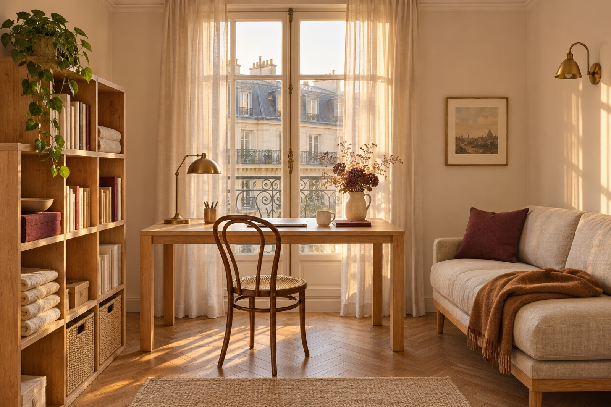

奶油底
$cream #F5ECD9
頁面底色、刊頭與導覽層的底。$body-bg
- 墨褐字
- 14.01AAA
- 勃艮第字
- 9.48AAA
- 褐灰字
- 6.48AA
- 深焦糖字
- 5.41AA
這是 NestCraft 法式復古風的印刷說明：_variables.scss 與 _base.scss，
把網站想成巴黎老家具鋪櫃檯上的一本手翻型錄，

優雅襯線字體，折抵標籤帶有火漆印章意象
色系搭配與 UI 視覺特點引用自課程規格文件的風格表。
一共 10 個頁面，guideline.html。
首頁index.html
滿版照片上壓一張置中徽框（H1 與兩顆按鈕），接著羊皮紙 2×2 價值、三段之字形空間靈感（熱點點擊開商品小卡）、人氣嚴選 4 欄、明信片見證與三個承諾，最後是勃艮第 CTA 帶。
商品一覽products.html
沒有側欄：置中分類文字列、上下焦糖雙線的工具列（共 10 件商品、更多篩選、排序），3 欄襯紙框卡，第 6 張後插一條整列羊皮紙宣言帶；寬度、價格、庫存篩選收在右側抽屜。
商品詳情product.html
以橡木餐桌示範。資訊在左、雙線襯紙框主圖在右，下方 4 個橢圓浮雕縮圖；價格旁 56px「免運」印與點線尺寸卡；置中分頁籤（商品詳情、規格、評價）與你可能也會喜歡。
購物車cart.html
1040 寬的整寬帳冊（商品、單價、數量、小計），像一張發票；帳冊下方左邊是折扣碼，右邊是點線總計與運費火漆印。
結帳checkout.html
780 寬的單欄訂購單：訂單摘要在最上，收件、配送、付款、發票備註在中間，金額總計、火漆印與確認付款在最下。
付款結果order-result.html
680 寬的置中書信：96px 成功印蓋印回彈一次，雙線收據，再接「接下來會發生什麼」三段短文。
登入login.html
480 寬的置中邀請卡，橢圓浮雕照片跨在卡片上緣；Email、密碼、LINE 與 Google 登入。
註冊register.html
同一張邀請卡（浮雕照片縮成 96×128），說明下方多一排加入會員的三個好處，最後是同意條款與建立帳號。
我的訂單orders.html
880 寬、全部置中，沒有會員側欄；狀態分頁可以實際切換，每筆訂單是一張雙線收據，出貨中多一條菱形節點的配送進度。
設計 Guidelineguideline.html
本頁：置中封面、點線目錄與九節規範，奶油與羊皮紙區塊交替。
<a href="products.html"> 這類相對連結換頁，瀏覽器直接打開就能看；商品詳情只有一頁 product.html。templates/page.html，再貼到每一頁，最後執行 npm run check。nav-link 或 nav-link active，樣式從父層選；頁首導覽與手機選單兩處都要標目前頁。scss/，執行 npm run css 編譯成 css/style.css；互動只用 Bootstrap 的 data-bs-* 與 js/main.js 的四個小功能（手機搜尋列聚焦、顯示密碼、分頁籤捲進畫面、我的訂單的狀態篩選）。奶油為底，勃艮第成「面」，
文字對比至少 4.5:1（AA），
$cream #F5ECD9
頁面底色、刊頭與導覽層的底。$body-bg
$paper #FBF7EE
一張紙、襯紙框、輸入框、卡片。$input-bg、$card-bg
$parchment #EDE0C6
交替區塊 .section-alt、停用按鈕與選項卡的底。不放輸入框。
$ink #2A1C16
主文字、標題；已完成徽章的底。$body-color
$ink-soft #64503F
次要文字、尺寸、說明、停用字。$body-secondary-color
$ink-faint #7A6552
紙面輸入框的 placeholder。刊頭搜尋框在奶油底上，placeholder 改用褐灰。
$burgundy #6D1F2F
主色：主要按鈕、連結、目前頁、焦點環、火漆印、選中框、首頁 CTA 帶。$primary
$burgundy-deep #561726
主要按鈕 hover、頁尾底、火漆印的陰影面。$link-hover-color
$rose #F1DCDC
選中的選項卡、次要按鈕與數量鍵 hover 的底。不當錯誤底色。
$on-burgundy #F8EFDC
主要按鈕字、頁尾與 CTA 帶的文字、火漆印上的字。$color-contrast-light
$on-burgundy-soft #D9BFA0
頁尾品牌語、版權小字；首頁 CTA 帶的小字。
客服中心
週一至週五 10:00–18:00
勃艮第面上：小標用淺焦糖 $caramel-light，內文用奶油字，說明用次要字；焦點環改成奶油色。
$caramel #B0702F
裝飾：雙線、花飾、菱形、步驟圈、24px 以上的大字。不寫小字。
$caramel-deep #8A521C
眉標、低庫存與警示文字、出貨中徽章的底。$warning
$caramel-light #E9C9A0
只用在勃艮第面上：頁尾小標、CTA 帶的花飾線。
$caramel-wash #F6E3C8
低庫存「僅剩 5 件」、ATM 付款期限的提醒底。
$line #DCCBAE
列表分隔、帳冊列、襯紙框外框、分頁籤底線。$border-color
$line-strong #8F7B63
輸入框、下拉、勾選框、數量鍵、點線引導、停用的虛線框。$input-border-color
$olive #4E6B35
現貨圓點「庫存 12 件」、驗證通過。$success
$brick #B23A1E
欄位錯誤框與訊息、錯誤摘要、付款未完成的細圈。比勃艮第偏橘。$danger
$slate #3D5A78
保留給資訊提示（$info），目前的頁面沒有使用。
$caramel-deep 字＋$caramel-wash 底
低庫存、付款期限。警示不用火漆印，也不用勃艮第。
$brick＋bi-exclamation-circle 圖示＋說明文字，欄位錯誤框 2px；不靠顏色就分得出來。色票只在 _variables.scss 定義，
$primary$burgundy$secondary$ink-soft$success$olive$info$slate$warning$caramel-deep$danger$brick$light$parchment$dark$ink$body-bg$cream$body-color$ink$body-secondary-color$ink-soft$body-secondary-bg$parchment$border-color$line$link-color$burgundy$link-hover-color$burgundy-deep$focus-ring-color$burgundy$input-bg$paper$input-border-color$line-strong$input-placeholder-color$ink-faint$input-focus-border-color$burgundy$input-disabled-bg$parchment$form-feedback-valid-color$olive$form-feedback-invalid-color$brick$color-contrast-light$on-burgundy全站宋體，像一本印刷型錄。
三套字體都從 Google Fonts 載入，
把有限的坪數
思源宋體 Noto Serif TC
全站中文，連內文、表單都是。標題 600、內文 400、按鈕與表單標籤 600，強調 700。
NT$ 20,250
NestCraft
Cormorant Garamond
logo（斜體 600）、20px 以上的價格、訂單編號與大數字、純西文短詞。不用在 20px 以下，也不用在中英混排的標題。
「結帳流程真的超順，跟著情境圖買完全不踩雷，小資族救星！」
芫荽 Iansui
只用在首頁見證的兩則引言，像明信片背面的手寫字。其他地方不用。
桌機與手機的字級在 992px 切換（$enable-rfs: false，不自動縮放）。
Display 首頁 H1
把有限的坪數，
活出無限的講究。
.display-1｜Noto Serif TC 600｜52／34px｜行高 1.35｜字距 .04em｜只在首頁徽框裡
H1 頁面標題
填寫資料與付款
h1｜600｜40／30px｜行高 1.45｜字距 .06em｜各頁標題，置中
H2 區塊標題
你可能也會喜歡
h2｜600｜32／26px｜置中，放在 .section-heading 裡會自動接一條花飾線
H3 卡片群、表單段落
先量尺寸，再挑家具
h3｜600｜22／19px｜宣言帶、分頁內容、狀態示意的小標
眉標
收納家具
.eyebrow｜600｜14px｜字距 .24em｜深焦糖｜分類、小標。用中文加字距，不用英文大寫、不用編號
內文
專為租屋族與小空間打造的靈活模組家具。不需妥協，輕鬆拼湊你的理想生活。橡木餐桌的桌板厚 3 cm，四人用餐剛好，也能當工作桌。
body｜400｜17／16px｜行高 1.9｜字距 .03em｜段落最寬 34em（.measure）
輔助文字
付款完成前，請不要關閉或重新整理頁面。
.text-note、.form-text｜400｜14px｜行高 1.75｜褐灰｜宋體 13px 以下橫畫會糊，不小於 14px
表單標籤與按鈕
收件人姓名
.form-label 600 15px、按鈕 600 16px（.btn-sm 15px）｜字距 .08em
價格
NT$ 16,800 NT$ 20,250 NT$ 16,800
.price 24px 商品卡｜.price-total 36px 總計｜.price-lg 40px 商品詳情｜Cormorant Garamond 600｜齊線等寬數字
訂單編號
NC-20260923-001 NC-20260923-001
.receipt-no 22px 我的訂單｜.receipt-no-lg 30px（手機 26px）付款結果｜不換行
logo
NestCraft
Cormorant Garamond 斜體 600｜34／26px｜左邊一枚 40px「N」火漆小印（手機 28px），下方「原創生活家居選物」14px
付款金額NT$ 20,250
.num：Noto Serif TC 的齊線數字，但寬度不一。這套字沒有等寬數字，tabular-nums 不會生效（實測 17px 時「1111」約 34px、「8888」約 40px），所以購物車、結帳的 .num 金額欄一律靠右對齊；要讓每一位數上下對齊時改用 .price。.price、.receipt-no：Cormorant Garamond 的齊線等寬數字。實測 40px 時「1111」「0000」「8888」寬度相同，帳冊的小計可以靠右對齊。 ，不會被拆到兩行。text-wrap: balance、段落用 pretty，避免最後一行只剩一兩個字。<wbr>，外層加 .text-phrase：中文只在空白與 <wbr> 處換行，「(三入組)」不會被拆開。長段落不要用。em、i、cite、address 已改成正體，瀏覽器的假斜體只是把字形推歪。只有 Cormorant 的西文（logo）可以斜。以 1rem = 16px 為基準，
貼齊：圖片與襯紙框之間的內距以外，元件彼此不貼齊
圖示與文字、眉標與品名
表單標籤與欄位、欄位與錯誤訊息
段落之間、選項卡之間、價格與按鈕
表單欄位之間（.g-4）、一張紙的手機內距、麵包屑與 H1
桌機的頁首上方、工具列與商品格、狀態示意的點線與標題
手機的區塊上下、頁首與內容、區塊標題與內容；結帳訂購單的內距
平板的區塊上下、桌機的頁首與內容、狀態示意與正式內容、頁面底部到頁尾
桌機的區塊上下（.section）、桌機頁面底部到頁尾（pb-lg-8）
.section：手機 1:1 示意。768px 以上 80px、992px 以上 112px；標題與內容在 992px 以上 80px。.page-header：手機 1:1 示意。992px 以上上方 40px、下方 80px；麵包屑與 H1 各斷點都是 24px。992px 以上的頁首是兩層刊頭。.site-header { position: sticky; top: -88px }：$masthead-height、$scroll-offset-lg 與本節的數字要一起改。
scroll-padding-top: 60px.section 上下.section-heading 下方.page-header 上方.page-header 下方pb-7 pb-lg-8.demo-state 上方.sheet 內距.sheet-lg 內距.mat 內距$masthead-height）$site-nav-height）$site-bar-height）scroll-padding-top格線 gutter 是 $grid-gutter-width: 2rem；容器內距是 $container-padding-x: 2.5rem 的一半，要大於等於 gutter，.row 才不會溢出。
直角、細線、不用陰影。
直角 0
$border-radius 各階都是 0：按鈕、輸入框、選項卡、徽章、提示、下拉、Modal。開關也是方框軌道＋方塊滑鈕（$form-switch-border-radius: 0）。
火漆印的波浪邊
16 瓣波浪邊的圓，是全站最主要的「圓」。見第六節。

橢圓浮雕 .cameo
4:5 的橢圓：商品詳情的縮圖、登入與註冊卡上緣的照片。目前那張加 .cameo-ring。
radio 與圓點
radio、庫存與狀態的圓點、步驟圈、首頁熱點與價值圖示的細圈。
雙線＝外線 1px＋3px 間隙＋內線 1px，double-line($line, $bg)（border 加兩層 inset box-shadow）畫，$bg 要等於元素自己的底色。border-style: double，線粗會被三等分。
焦糖雙線
「一張紙」的外框：.sheet（訂購單、登入卡、收據）、.mat-double、熱點小卡、首頁徽框。
勃艮第雙線
次要按鈕 .btn-outline-primary；停用時改成控制項框的虛線。
上下焦糖雙線
mixin double-rule-y：刊頭導覽層、商品一覽工具列、宣言帶。
墨褐雙線 .rule-double
總計上方、購物車帳冊的欄頭下方：像帳簿的合計線。
髮絲線 .rule
1px $line：列表分隔、帳冊列、襯紙框外框、分頁籤底線。
寬 W160 cm
點線引導 .leader
名稱與數值之間 1px 點線，像菜單價目：尺寸卡、規格表、總計、收據、目錄。
虛線
表示「不能選或已失效」：停用的選項卡與次要按鈕、已取消徽章；也標出「設計稿狀態示意」的示意框。
襯紙框 .mat
紙面底、12px 內距、1px 髮絲線外框，照片再一圈淡勃艮第細框。商品卡、縮圖都用它。
$enable-shadows: false，
卡片、區塊
用紙的顏色與線分層，不用陰影。
$box-shadow
0 8px 24px rgba(42, 28, 22, .12)：首頁熱點小卡（下拉選單）；Modal 已預設，目前的頁面沒有使用。
印的浮雕
蠟面漸層＋邊緣高光＋內凹的壓印環；落影只有 0 1px 1px，字用 0 -1px 0 的陰影壓進蠟裡。
Notion 風格表寫的「折抵標籤帶有火漆印章意象」。
.seal-sm
.seal
.seal-lg＋.seal-stamp
bi-check-lg 40px<symbol id="seal-wax">）drop-shadow(0 1px 1px)，像壓在紙上，不是浮起來的卡片aria-hidden；螢幕閱讀器讀到「免運」，商品卡另有隱藏的「單件即享」SVG 圖示庫（#seal-wax、漸層 #seal-grad、花飾 #fleuron）寫在每頁的頁首區塊開頭，用 .svg-sprite（寬高 0）藏起來；不要改成 display: none，Chrome 會讓 symbol 裡的漸層失效。
付款結果的成功印加 .seal-stamp，
cubic-bezier(.2, .9, .3, 1.3)transform 與 opacity，不推擠文字prefers-reduced-motion: reduce 時取消，直接顯示最後的樣子預設、滑過、按下、鍵盤焦點、停用、錯誤。
.btn-primary 勃艮第主要按鈕推進流程的主要動作：前往結帳、確認付款、直接購買、登入。同一組動作只有一顆。
預設
滑過：深勃艮第
按下：深勃艮第
鍵盤焦點：2px 外框
停用：羊皮紙底
.btn-outline-primary 雙線次要按鈕和主要按鈕並列，或卡片裡的單一動作：加入購物車、繼續購物、套用、查看我的訂單旁的繼續購物。
預設
滑過：玫瑰霧底
按下：玫瑰霧底
鍵盤焦點：2px 外框
停用：虛線框
.btn-text 文字連結低強調的動作：查看全部商品、返回購物車、移除、回到目錄。內建 44px 觸控高度，看起來仍是一行文字。
預設：褐灰＋1px 底線
滑過：勃艮第＋2px 底線
按下：勃艮第
鍵盤焦點：2px 外框
停用
.btn-cream 勃艮第面上的按鈕只用在勃艮第色面（首頁最終 CTA 帶的「立即開始我的改造」）；焦點環改成奶油色。
預設
滑過：紙面底
按下
鍵盤焦點：奶油外框
停用
.btn-sm 高 44px
預設 高 50px
.btn-lg 高 60px
圖示在文字左側
處理中：停用＋轉圈
not-allowed。:focus-visible）：2px 勃艮第實線、與元素相距 2px，露出底色當間隙。輸入框是 1px 邊框加 1px 勃艮第 box-shadow，合成 2px。.btn-text、數量鍵、麵包屑、分頁籤、頁首圖示按鈕都已內建。每個欄位都有看得見的標籤；aria-describedby 連到欄位。
預設
鍵盤焦點
只用於配送當天聯繫。
已填寫＋說明
訂單確認信與出貨通知會寄到這裡。
錯誤
手機號碼需要 10 碼數字，
停用
目前只配送台灣本島。
下拉選單
密碼＋顯示密碼
選填＋多行
勾選框
單選與開關
數量鍵
數量是 1 時，減少鍵停用。
數量鍵停用（已售完）
span.form-label-optional「選填」，不加括號；必填不加星號，在表單開頭用一句話說明。.field-error（bi-exclamation-circle＋說明怎麼修正），欄位加 aria-invalid="true"；不用勃艮第，也不在輸入框裡放圖示。.alert-danger 摘要，寫出還有幾個欄位要處理。<form action="下一頁"> 換頁，密碼、Email、卡號這類個資欄位不加 name；互斥的 radio 才有 name。每個欄位都要有 id、<label for> 與 autocomplete。結帳的配送方式與付款方式。
預設
滑過
選中
停用
Bootstrap .nav-underline，置中。.tab-count 上標。
點其他分頁，或用左右方向鍵切換。分頁列放不下時可以橫向捲動，js/main.js 會把切換到的項目捲進畫面。
評價分頁：上方置中平均分數，下方三則評價以髮絲直線隔開。
class="nav-link active" 與 aria-current="page"；頁首與手機選單兩處都要標。aria-current；購物車、結帳、付款結果、登入、註冊與本頁不標。li + li::before，導覽連結的 class 只能是 nav-link 或 nav-link active（npm run check 只認這兩種）。商品一覽的分類：數量是名稱右上方 14px 小字，目前分類勃艮第字＋底線＋aria-current；576px 以下橫向捲動。
置中、分隔符號是全形斜線「／」；最後一項是目前頁，不做成連結。
購物車：目前＝勃艮第圈＋粗體，未到＝焦糖細圈＋褐灰字
結帳：已完成＝勃艮第實心＋奶油勾；結帳頁的「購物車」可以點回去
付款結果：三步全部完成，最後一步加 aria-current="step"
圓圈之間是中央有小菱形的髮絲線；576px 以下只顯示目前步驟的文字，其他步驟的文字留給螢幕閱讀器，連接線縮成 24px。
五種訂單狀態不只靠顏色：
錯誤摘要 .alert-danger
沒有登入成功
Email 或密碼不正確。
付款未完成（不用印）
付款未完成，訂單尚未成立
朱磚 1.5px 細圈＋驚嘆號，下方接說明框與處理建議。
role="alert"。購物車裡還沒有商品。
瀏覽商品一覽.empty-state：置中一句話＋小花飾＋一顆按鈕。
每頁底部的「設計稿狀態示意」.demo-state 用一條點線和正式內容分開，
無外框；圖片放在襯紙框，
商品一覽：達免運門檻蓋 40px 印
首頁人氣嚴選：勃艮第「閃電結帳」
已售完：紙籤＋照片變淡＋按鈕停用，不蓋印
沿用 Bootstrap 斷點，
單列頁首 64px；首頁照片 4:3、徽框往上壓 40px；商品 2 欄；分類列、狀態分頁、人氣嚴選橫向捲動並貼齊螢幕兩側；步驟條只顯示目前步驟的文字；按鈕上下排滿寬。
首頁 Hero 兩顆按鈕並排；商品詳情的兩顆購買按鈕並排、三個服務改成三欄；付款方式 2×2；付款結果兩顆按鈕並排。
區塊上下 80px；首頁照片高 clamp(420px, 56vh, 560px)、徽框往上壓 120px；商品一覽 3 欄、工具列出現排序；收件欄位兩欄；一張紙內距 48px；頁尾三欄。
兩層刊頭（第一層 88px＋導覽層 52px）；桌機字級（內文 17px、H1 40px）；區塊上下 112px；首頁照片 clamp(360px, 100vh - 385px, 640px)（矮螢幕筆電的第一屏也看得到主按鈕）、徽框壓 180px、情境之字形、人氣嚴選 4 欄；商品詳情資訊左圖右；購物車變成帳冊表格；訂單明細左右兩欄。
商品詳情主區從 6／6 改成 5／7（資訊窄、圖大）；概覽的設計原則排成一列四欄。
版心最寬 1200px；更寬的螢幕只增加兩側留白。1920 寬時首頁照片、勃艮第 CTA 帶、頁尾與羊皮紙區塊鋪滿，內容對齊版心。
index.htmlproducts.htmlproduct.htmlcart.htmlcheckout.htmlorder-result.htmllogin.htmlregister.htmlorders.htmlguideline.html商品分類、我的訂單的狀態分頁、首頁人氣嚴選，.bleed-x（或 @include bleed-x）：
12 欄格線，gutter 32px。
.row-cols-2 .row-cols-md-3 商品一覽
.col-lg-6 .col-xl-5＋.col-lg-6 .col-xl-7 商品詳情（資訊在左、圖庫在右）
窄頁版心 .container-login～.container-cart（以 1200 為全寬的比例）
左邊「建議」是這一套的做法，
宋體本身就有書卷氣。
優雅的巴黎選物鋪
優雅的巴黎選物鋪
font-style: italic 的假斜體。只有 Cormorant 的西文 logo 可以斜。印是店主在訂購單上蓋的那一下，
免運 已達滿 NT$ 3,000 免運門檻
焦糖棕 #B0702F 對奶油只有 3.44:1，
收納家具
收納家具
勃艮第是主色，代表「主要動作、已經成立」。
手機號碼需要 10 碼數字。
格式錯誤
花飾線、小花飾只放在區塊 H2 下方、頁尾、訂購單段落之間、步驟條與空狀態。
人氣嚴選
最受租屋族歡迎的多功能家具。
置中是這一套的骨架，
橡木餐桌
嚴選北美 FAS 級白橡木打造，保留天然溫潤的木紋肌理與原木觸感。寬敞的桌面設計搭配倒角安全收邊，穩固的實木桌腳提供優異的承重力，是與家人朋友共享美好時光的完美選擇。
橡木餐桌
嚴選北美 FAS 級白橡木打造，保留天然溫潤的木紋肌理與原木觸感。寬敞的桌面設計搭配倒角安全收邊，穩固的實木桌腳提供優異的承重力，是與家人朋友共享美好時光的完美選擇。
Cormorant Garamond 的 x 高度小，
NT$ 16,800
尺寸 W160 × D80 × H75 cm
.num。NT$ 16,800
W160 × D80 × H75 cm